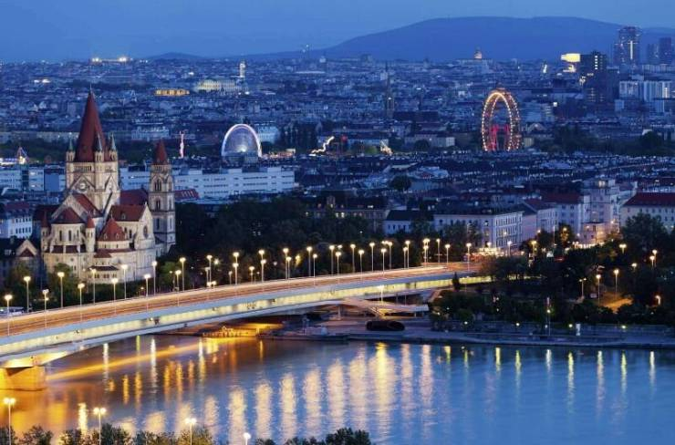

Berlin

Берлин - столица Германии, а также крупнейший город ФРГ с населением
более 3 млн. человек. Расположен в восточной части страны в 70 км от
границы с Польшей. Берлин - это крупный мегаполис, город разнообразной
архитектуры, музеев и дворцов, интересных достопримечательностей и
оживленной ночной жизни. Несмотря на разрушения Второй мировой войны и
послевоенного разделения Берлинской стеной, Берлин восстановил не только
свой облик и статус, но и стал городом-символом современной Германии.
Берлин немного похож на лоскутное одеяло. Здесь можно увидеть
достопримечательности разных исторических периодов: от нескольких
сохранившихся средневековых зданий недалеко от Александерплатц до
ультрасовременных металлических конструкций на Потсдамской площади. Это
город потрясающего архитектурного и культурного разнообразия, который
придется по вкусу многим туристам.
Vien

Вена - столица и крупнейший город Австрии, расположенный в
северо-восточной части страны. Это мегаполис с неповторимым шармом,
энергией и атмосферой, исторический центр которого включён в список
объектов Всемирного наследия ЮНЕСКО. Вена - это культурная столица
Европы, город удивительно романтичный и открытый, который сохранил свое
колоссальное историческое наследие. Здесь среди просторных имперских
площадей и роскошных дворцов таятся удивительные достопримечательности,
памятники архитектуры и шедевры искусства.Вена является одним из самых
популярных городов Европы. Столица Австрии манит гастрономических
эстетов своими кулинарными изысками и ресторанами, модников - своими
магазинами, богему - театрами, оперой, выставками и музеями. Вена
считается городом музыки и искусства. Здесь жили и творили гениальные
композиторы: Моцарт, Бетховен, Шуберт и Штраус, а также многие известные
художники, которые превратили город в сокровищницу Европы.